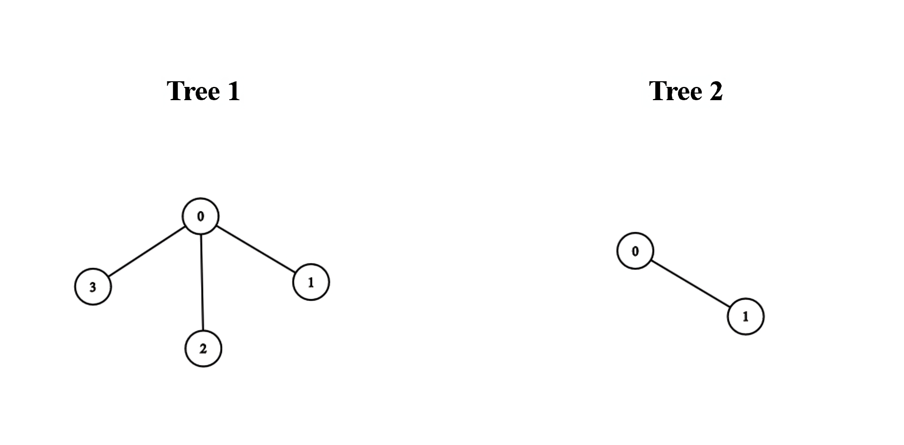
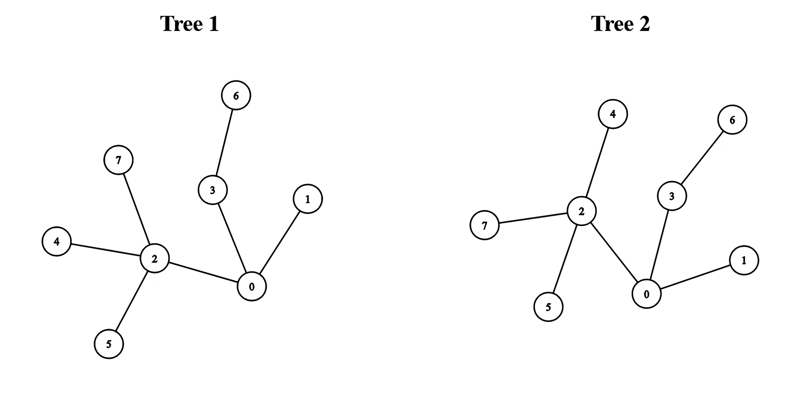

| Category | Difficulty | Likes | Dislikes |
|---|---|---|---|
| Algorithms | Hard | 687 | 39 |
servicenow
There exist two undirected trees with n and m nodes, numbered from 0 to n - 1 and from 0 to m - 1, respectively. You are given two 2D integer arrays edges1 and edges2 of lengths n - 1 and m - 1, respectively, where edges1[i] = [ai, bi] indicates that there is an edge between nodes ai and bi in the first tree and edges2[i] = [ui, vi] indicates that there is an edge between nodes ui and vi in the second tree.
You must connect one node from the first tree with another node from the second tree with an edge.
Return the minimum possible diameter of the resulting tree.
The diameter of a tree is the length of the longest path between any two nodes in the tree.
Example 1:

Input: edges1 = [[0,1],[0,2],[0,3]], edges2 = [[0,1]]
Output: 3
Explanation:
We can obtain a tree of diameter 3 by connecting node 0 from the first tree with any node from the second tree.
Example 2:

Input: edges1 = [[0,1],[0,2],[0,3],[2,4],[2,5],[3,6],[2,7]], edges2 = [[0,1],[0,2],[0,3],[2,4],[2,5],[3,6],[2,7]]
Output: 5
Explanation:
We can obtain a tree of diameter 5 by connecting node 0 from the first tree with node 0 from the second tree.
Constraints:
1 <= n, m <= 105edges1.length == n - 1edges2.length == m - 1edges1[i].length == edges2[i].length == 2edges1[i] = [ai, bi]0 <= ai, bi < nedges2[i] = [ui, vi]0 <= ui, vi < medges1 and edges2 represent valid trees.